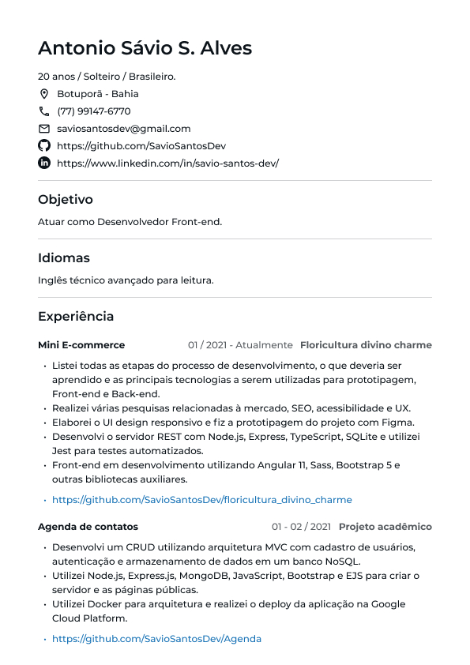
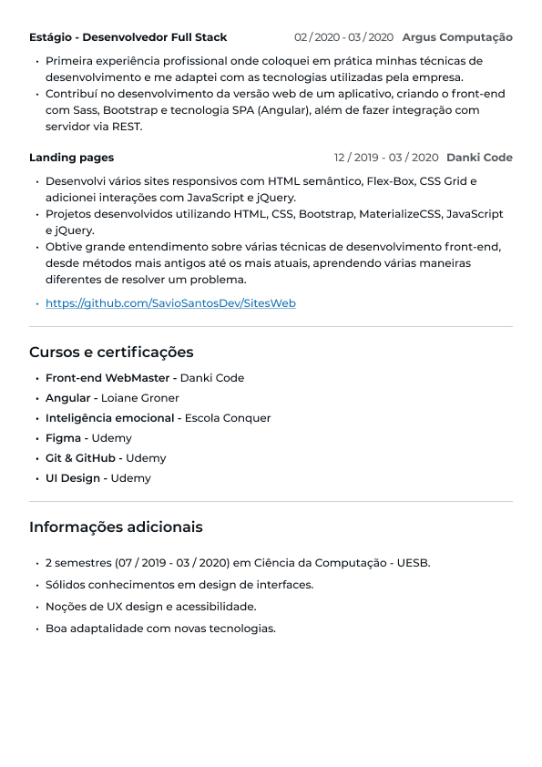

<article class="modal fade" tabindex="-1" aria-hidden="true" #cvModal>
  <div class="modal-dialog modal-fullscreen">
    <div class="modal-content">

      <header class="modal-header">
        <h3 class="modal-title">Currículo Antonio Sávio</h3>
        <button type="button" class="btn-close" data-bs-dismiss="modal" aria-label="Close"></button>
      </header>

      <figure class="modal-body bg-light d-flex flex-column align-items-center mb-0">
        
        
      </figure>

      <footer class="modal-footer">
        <button type="button" class="btn" data-bs-dismiss="modal">Voltar</button>
        <a href="/assets/curriculum/cv_antonio_savio.pdf" download="cv_antonio_savio" class="btn btn-primary">Baixar PDF</a>
      </footer>
    </div>
  </div>
</article>
